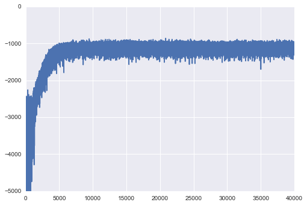

Mini-batch ADVI on hierarchical regression model¶
Unlike Gaussian mixture models, (hierarchical) regression models have independent variables. These variables affect the likelihood function, but are not random variables. When using mini-batch, we should take care of that.
%matplotlib inline
import matplotlib.pyplot as plt
import numpy as np
import pymc3 as pm
import pandas as pd
data = pd.read_csv('../data/radon.csv')
county_names = data.county.unique()
county_idx = data['county_code'].values
n_counties = len(data.county.unique())
Here, ‘log_radon_t’ is a dependent variable, while ‘floor_t’ and ‘county_idx_t’ determine independent variable.
import theano.tensor as tt
log_radon_t = tt.vector()
log_radon_t.tag.test_value = np.zeros(1)
floor_t = tt.vector()
floor_t.tag.test_value = np.zeros(1)
county_idx_t = tt.ivector()
county_idx_t.tag.test_value = np.zeros(1, dtype='int32')
minibatch_tensors = [log_radon_t, floor_t, county_idx_t]
with pm.Model() as hierarchical_model:
# Hyperpriors for group nodes
mu_a = pm.Normal('mu_alpha', mu=0., sd=100**2)
sigma_a = pm.Uniform('sigma_alpha', lower=0, upper=100)
mu_b = pm.Normal('mu_beta', mu=0., sd=100**2)
sigma_b = pm.Uniform('sigma_beta', lower=0, upper=100)
# Intercept for each county, distributed around group mean mu_a
# Above we just set mu and sd to a fixed value while here we
# plug in a common group distribution for all a and b (which are
# vectors of length n_counties).
a = pm.Normal('alpha', mu=mu_a, sd=sigma_a, shape=n_counties)
# Intercept for each county, distributed around group mean mu_a
b = pm.Normal('beta', mu=mu_b, sd=sigma_b, shape=n_counties)
# Model error
eps = pm.Uniform('eps', lower=0, upper=100)
# Model prediction of radon level
# a[county_idx] translates to a[0, 0, 0, 1, 1, ...],
# we thus link multiple household measures of a county
# to its coefficients.
radon_est = a[county_idx_t] + b[county_idx_t] * floor_t
# Data likelihood
radon_like = pm.Normal('radon_like', mu=radon_est, sd=eps, observed=log_radon_t)
Applied interval-transform to sigma_alpha and added transformed sigma_alpha_interval to model.
Applied interval-transform to sigma_beta and added transformed sigma_beta_interval to model.
Applied interval-transform to eps and added transformed eps_interval to model.
Random variable ‘radon_like’, associated with ‘log_radon_t’, should be given to the function for ADVI to denote that as observations in the likelihood term.
minibatch_RVs = [radon_like]
On the other hand, ‘minibatches’ should include the three variables above.
def create_minibatch(data):
rng = np.random.RandomState(0)
while True:
ixs = rng.randint(len(data), size=100)
yield data[ixs]
minibatches = [
create_minibatch(data.log_radon.values),
create_minibatch(data.floor.values),
create_minibatch(data.county_code.values.astype('int32'))
]
total_size = len(data)
Then, run ADVI with mini-batch.
means, sds, elbos = pm.variational.advi_minibatch(
model=hierarchical_model, n=40000, minibatch_tensors=minibatch_tensors,
minibatch_RVs=minibatch_RVs, minibatches=minibatches,
total_size=total_size, learning_rate=1e-2, epsilon=1.0
)
Iteration 0 [0%]: ELBO = -2594.62
Iteration 4000 [10%]: ELBO = -1396.65
Iteration 8000 [20%]: ELBO = -1130.47
Iteration 12000 [30%]: ELBO = -1062.18
Iteration 16000 [40%]: ELBO = -998.42
Iteration 20000 [50%]: ELBO = -1327.23
Iteration 24000 [60%]: ELBO = -1293.85
Iteration 28000 [70%]: ELBO = -1076.49
Iteration 32000 [80%]: ELBO = -1217.88
Iteration 36000 [90%]: ELBO = -1296.58
Finished [100%]: ELBO = -1072.46
Check the trace of ELBO and compare the result with MCMC.
import matplotlib.pyplot as plt
import seaborn as sns
plt.plot(elbos)
plt.ylim(-5000, 0);

# Inference button (TM)!
with pm.Model():
# Hyperpriors for group nodes
mu_a = pm.Normal('mu_alpha', mu=0., sd=100**2)
sigma_a = pm.Uniform('sigma_alpha', lower=0, upper=100)
mu_b = pm.Normal('mu_beta', mu=0., sd=100**2)
sigma_b = pm.Uniform('sigma_beta', lower=0, upper=100)
# Intercept for each county, distributed around group mean mu_a
# Above we just set mu and sd to a fixed value while here we
# plug in a common group distribution for all a and b (which are
# vectors of length n_counties).
a = pm.Normal('alpha', mu=mu_a, sd=sigma_a, shape=n_counties)
# Intercept for each county, distributed around group mean mu_a
b = pm.Normal('beta', mu=mu_b, sd=sigma_b, shape=n_counties)
# Model error
eps = pm.Uniform('eps', lower=0, upper=100)
# Model prediction of radon level
# a[county_idx] translates to a[0, 0, 0, 1, 1, ...],
# we thus link multiple household measures of a county
# to its coefficients.
radon_est = a[county_idx] + b[county_idx] * data.floor.values
# Data likelihood
radon_like = pm.Normal(
'radon_like', mu=radon_est, sd=eps, observed=data.log_radon.values)
#start = pm.find_MAP()
step = pm.NUTS(scaling=means)
hierarchical_trace = pm.sample(10000, step, start=means, progressbar=False)
Applied interval-transform to sigma_alpha and added transformed sigma_alpha_interval to model.
Applied interval-transform to sigma_beta and added transformed sigma_beta_interval to model.
Applied interval-transform to eps and added transformed eps_interval to model.
from scipy import stats
import seaborn as sns
varnames = means.keys()
fig, axs = plt.subplots(nrows=len(varnames), figsize=(12, 18))
for var, ax in zip(varnames, axs):
mu_arr = means[var]
sigma_arr = sds[var]
ax.set_title(var)
for i, (mu, sigma) in enumerate(zip(mu_arr.flatten(), sigma_arr.flatten())):
sd3 = (-4*sigma + mu, 4*sigma + mu)
x = np.linspace(sd3[0], sd3[1], 300)
y = stats.norm(mu, sigma).pdf(x)
ax.plot(x, y)
if hierarchical_trace[var].ndim > 1:
t = hierarchical_trace[var][i]
else:
t = hierarchical_trace[var]
sns.distplot(t, kde=False, norm_hist=True, ax=ax)
fig.tight_layout()